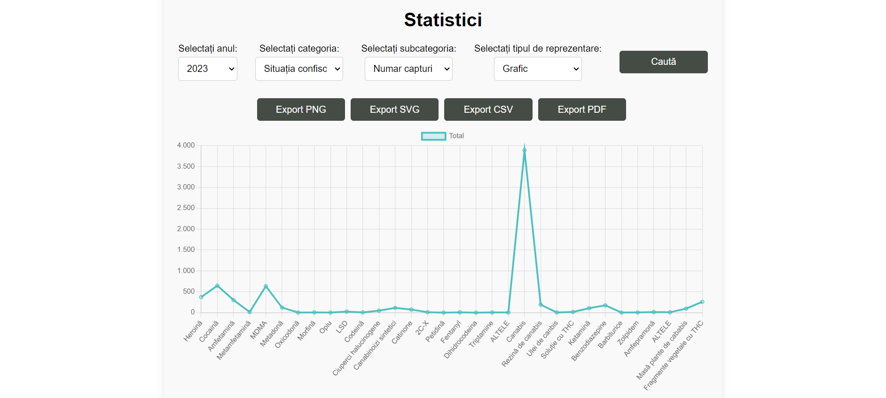
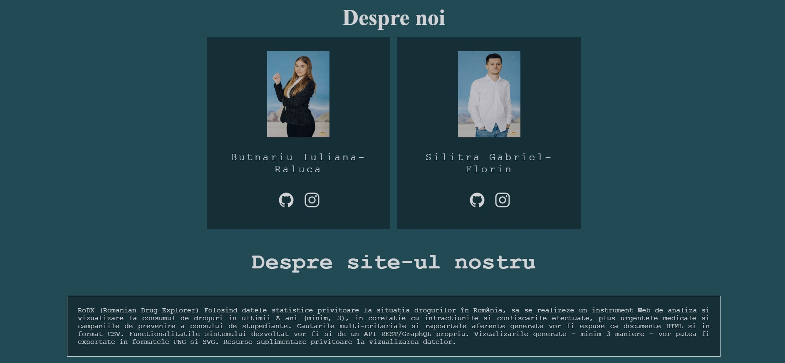

RoDX (Romanian Drug Explorer)
Cuprins
- Autori
- 1. Introducere
- 2. Descriere Generală
- 3. Interfețele aplicației
- 4. Caracteristici ale sistemului
- 5.Funcționalități pentru protecție și securitate
1. Introducere
1.1 Scop
Scopul platformei RoDX (Romanian Drug Explorer) este de a oferi o soluție digitală cuprinzătoare pentru colectarea, analiza și vizualizarea datelor referitoare la infracționalitatea legată de droguri în România. Aceasta include urmărirea situației confiscărilor de droguri, gestionarea urgențelor medicale cauzate de consumul de droguri și analizarea infracțiunilor legate de droguri, cum ar fi numărul de persoane cercetate și condamnate.
1.2 Publicul țintă
RoDX (Romanian Drug Explorer) se adresează autorităților și instituțiilor publice, cercetătorilor și academicienilor, organizațiilor non-guvernamentale și publicului larg, oferind un instrument digital pentru monitorizarea, analiza și combaterea fenomenului drogurilor în România.
1.3 Scopul Produsului
Scopul platformei RoDX (Romanian Drug Explorer) este de a oferi o soluție digitală completă pentru colectarea, analiza și vizualizarea datelor referitoare la infracționalitatea legată de droguri în România, permițând utilizatorilor să filtreze informațiile și să exporte grafice și date în diverse formate.
1.4 Bibliografie
- Buraga Sabin-Corneliu, Site-ul Tehnologii Web, FII UAIC.
- https://w3c.github.io/scholarly-html/
- https://www.w3schools.com/html/
- https://www.w3schools.com/css/default.asp
- https://www.w3schools.com/js/default.asp
- https://cdnjs.com/libraries/jspdf
2. Descriere Generală
2.1 Perspectiva produsului
RoDX (Roumanian Drug Explorer) este o aplicație dezvoltată în cadrul cursului de Tehnologii Web, menită să ofere date despre situația statistică a drogurilor din România, dar și informații tehnice despre acestea.
2.2 Funcționalitățile produsului
Fiecare utilizator va avea acces la urmatoarele funcționălități.- Să se înregistreze pe site.
- Să se autentifice pe site.
- Să actualizeze datele profilului, sau chiar să steargă profilul.
- Să filtreze datele în funcție de an, categorie și subcategorie pentru a obține informații specifice și detaliate.
- Să genereze diagrame bazate pe informații legate de situația drogurilor din România pe trei categorii infracțiuni, confiscări și urgențe medicale .
- Să vizualizeze datele prin mai multe optiuni,printre care: grafice de tip bar chart, line chart și pie chart.
- Să vizualizeze informații despre campaniile de prevenire a drogurilor.
- Să exporte aceste diagrame in format PNG,SVG,CSV,PDF.
Diagramele useCase reprezintă interacțiunile dintre pagini ilustrând funcționalitățile de care beneficiază fiecare utilizator.
În prima diagrama sunt ilustrate funcționalitățile pe care le are un utilizator care nu deține un cont.
În a doua diagramă sunt ilustrate funcționalitățile pe care le are un utilizator care deține un cont.
2.3 Clase și caracteristici ale utilizatorilor
2.3.1 Utilizator principal
- Utilizatorii care sunt autentificați pot fii:
-
- Orice categorie de oameni care doresc să afle informații despre statistica drogurilor, dar și informații despre acestea.
- Specialiști care se ocupă de analiza statisticii drogurilor din România.
- Utilizatorii care nu sunt autentificați, dar care sunt nevoiti sa creeze un cont pentru a vizualiza toate functionalitatile oferite.
2.3.2 Caracteristici
- Utilizatorii care sunt autentificați pot să-și salveze statististicile de care sunt interesați, atât prin intermediul contului lor de utilizator, cât și în diferite formate cum ar fii PNG,SVG,CSV.
- Utilizatorii care nu sunt autentificați pot să vizualizeze informațiile despre statisticile despre droguri, dar în schimb aceștia nu au posibilitatea să salveze filtrele într-un cont. De asemenea, aceștia pot să se înregistreze ca și utilizator și să beneficieze pe deplin de toate funcționalitățile.
2.4 Mediul de operare
Produsul dezvoltat poate fi utilizat pe orice dispozitiv cu un browser web care suportă HTML5, CSS și JavaScript.
2.5 Documentația pentru utilizator
Utilizatorii pot consulta acest document pentru explicații detaliate despre funcționalitățile aplicației web.
3. Interfețele aplicației
3.1 Interfața utilizatorului
Mai jos oferim o prezentare a fiecarei pagini impreuna cu functionalitatile sale:-
- Aceasta reprezintă meniul de navigare către paginile de logare, inregistrare, dar si catre pagina cu informatii despre tema proiectului si prezentarea autorilor.
-
- Aceasta reprezintă meniul de navigare către paginile care prezinta functionalitatiele site-ului, pagina de profil, vizualizarea campaniilor, statistici.
- Pagina de loagre
-
- Pagina aceasta are rolul de a realiza autentificare utilizatorilor la toate funcționalitățile site-ului
- Pentru a se autentifica utilizatorul trebuie să completeze câmpurile de username și parolă corect.
- În caz că utilizatorul nu are cont pe site acesta poate să-și creeze unul accesând pagina de înregistrare apăsând pe butonul de Creeaza unul!.
- Pagina de înregistrare
-
- Pagina aceasta oferă funcționalitatea de înregistrare utilizatorilor.
- Pentru a se înregistra utilizatorul trebuie să completeze câmpurile Numele intreg, Username,Email,Numar de telefon, Parolă și Confirmarea parolei
- În caz că utilizatorul are deja un cont acesta poate să revină la pagina de autentificare apăsând pe butonul de Conectati-va.
- Pagina dashboard
-
- Pagina de statistici
-
- Pagina aceasta are scopul de a ilustra grafic statisticile despre situația drogurilor din România.
- În momentul în care un utilizator selectează un An, acestuia îi sunt generate 3 categorii de filtre, Infracțiuni, Confiscări și Urgențe medicale.
- După ce una distre aceste 3 categorii este selectă ne sunt generate mai multe câmpuri care reprezintă sub-categorii a categoriei principale, pe care utilizatorul le poate alege
- După ce utilizatorul a selectat campurile, acesta are posibilitatea de a alege din 3 metode de reprezentare grafică BarPlot, Grafic sau Pie
- La final după apasarea butonului Caută, pe ecran sunt afișate următoarele componente, diagrama care conține informații bazate pe filtrele selectate de utilizator, și butoanele de Export care au rolul de exporta diagramele în 4 formate, PNG, SVG, CSV, PDF.

- 
- Pagina de campanii
-
- Pagina aceasta are rolul de oferii informații despre diferite campanii de prevenire a consumului de droguri.
- La apăsarea butonului Read more se va deschide o caseta care conține mai multe informații despre campania respectivă.
- Pagina About
-
- Pagina aceasta are rolul de oferii informații despre autorii site-ului.
 - Pagina de Profil
-
- Pagina aceasta include toate informatiile despre utilizatorul care este logat, si, de asemenea poate modifica datele sau are optiunea de la sterge contul definitiv.
- În momentul în care un utilizator nou este creat, credențialele acestuia sunt introduse în baza de date.De asemenea, când utilizatorul decide să-și modifice credențialele, noile valori sunt și ele actualizate în baza de date.
- Pentru a-și modifica credențialele utilizatorul trebuie să fie autentificat.
- Pentru a se autentifica utilizatorul are nevoie de un cont care este înregistrat în baza de date.
- Tokenul de autentificare este scos din local storage.
- Utilizatorul trebuie să fie autentificat.
3.2 Interfața Hardware
Acest produs nu necesită interfețe hardware, funcționând pe orice platformă (calculatoare, laptopuri, telefoane etc.) care are instalat un browser.
3.3 Interfața Software
Cerințele minime de software includ un browser funcțional, compatibil cu HTML5 și cu JavaScript.
MongoDBC
Aceasta reprezinta baza de date în care stocam informații despre fiecare utilizator.4. Caracteristici ale sistemului
4.1 Gestionarea contului
4.1.1 Descriere și generalități
Un utilizator se poate înregistra completandu-și numele, numele de utilizator, un email și o parolă.Acesta se poate autentifica având nevoie doar de email și de o parolă.Utilizatorul are posibilitatea în timp ce este autentificat să-și modifice credențialele de la cont dacă dorește acest lucru.4.1.2 Actualizarea informațiilor
4.1.3 Condiții de funcționare
4.2 Secțiunea de Logout
4.2.1 Descriere și generalități
Secțiunea de Logout are rolul de a deconecta utilizatorul de pe cont, și îl redirecționează către pagina de autentificare, eliminând tokenul din local storage.4.2.2 Actualizare informațiilor
4.2.3 Condiții de funcționare
4.3 Filtrarea și exportarea datelor.
4.3.1 Descriere și generalități
În momentul în care un utilizator selectează un An, acestuia îi sunt generate 3 categorii de filtre, Infracțiuni, Confiscări și Urgențe medicale. După ce una distre aceste 3 categorii este selectată ne sunt generate mai multe câmpuri care reprezintă sub-categorii a categoriei principale, pe care utilizatorul le poate completa după nevoile sale După ce utilizatorul a completat toate campurile, acesta are posibilitatea de a alege din 3 metode de reprezentare grafică BarPlot, Grafic și Pie. La final după apasarea butonului Caută, pe ecran sunt afișate următoarele componente, diagrama care conține informații bazate pe filtrele selectate de utilizator, și butoanele de Export care au rolul de exporta diagramele în 4 formate, PNG, SVG, CSV si PDF. Aceata este o funcționalitate cu o prioritate ridicată a aplicației.4.3.2 Condiții de funcționare
- Pentru a selecta un filtru preferat utilizatorul trebuie să fie autentificat.
5. Funcționalități pentru protecție și securitate
5.1 Securizarea datelor
Conturile utilizatorilor sunt protejate printr-un sistem de autentificare care utilizează criptarea parolelor și tokenurile de acces, în scopul menținerii confidențialității și securității datelor lor. Aceasta măsură asigură că informațiile utilizatorilor sunt protejate și că aplicația rămâne securizată împotriva amenințărilor potențiale.
5.2 Calitățile Software
- Adaptabilitate
- Ușurință în utilizare
- Fiabilitate
- Flexibilitate
- Maintenabilitate